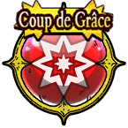

| Lv: | 140 |
|---|---|
| HP: | |
| MP: | |
| ATK: | |
| DEF: | |
| AGL: | |
| WIS: | |
| Move: | |
| Weight: | 60 |
| Weaknesses: |  |
 |
/ |  |
 |
|---|---|---|---|---|---|
| Resistances: |  |
 |
/ |  |
 |
| Immunities: |  |
Note: All perks/abilities denoted with an * are using unofficial translations
| Abilities | ||||||
|---|---|---|---|---|---|---|
| Level | Type | Name | MP | Element | Range | Description |
| 1 |  |
Running Orders* 疾走の号令 |
24 |  |
 1-2 (incl. self) |
Raises AGL of all allies in area of effect for 3 turns |
| 38 |  |
Captain Cyclone* キャプテンサイクロン |
106 | |
 Front |
Deals major Woosh-type martial damage (233 base potency) to all enemies in area of effect, often charms |
| 52 |  |
Burning Attack* バーニングアタック |
91 |  |
 1-3 |
Deals major surehit Sizz-type martial damage (152 base potency) to 1 enemy 2 times |
| 82 |  | Pirate Scramble* パイレーツスクランブル |
109 |  |
1-4 |
Deals major Frizz-type martial damage (126 base potency) to 1 enemy 3 times, ignores some Light Damage Res Turns needed: 2 turns (Times usable: 3) |
| Base Perks | ||
|---|---|---|
| Level | Name | Description |
| 1 | Max HP +30 | Raises max HP by 30 |
| 1 | AGL +20 | Raises max AGL by 20 |
| 1 | Solitary Comeback* 孤軍奮闘 |
Before HP hits 0: Preserves HP at 1, 1 time per battle This perk can be triggered by poison, special effect spaces, ally attacks, and reflected attacks, as well as counterattacks, follow-ups, and other attacks or effects triggered by perks When there are 3 remaining allies (incl. self): Raises martial potency/recovery by 30% and reduces damage taken by 30% When there are 2 remaining allies (incl. self): Raises martial potency/recovery by 50% and reduces damage taken by 40% When there is 1 remaining ally (incl. self): Raises martial potency/recovery by 100% and reduces damage taken by 50% |
| 110, 120, 130, 140 | Burning Attack* potency +2% | Raises Burning Attack* potency by 2% |
| 110, 120, 130, 140 | Pirate Scramble* potency +2% | Raises Pirate Scramble* potency by 2% |
| Awakening Perks | ||
|---|---|---|
| Awakening | Name | Description |
| 1 | Pirate Empress* 気高き女海賊 |
Action start on odd turns until turn 10: Raises AGL, Move, and martial potency/recovery for 3 turns |
| 2 | Zam Res +25 | Raises Zam resistance by 25 |
| 3 | Counterattack Signal* 逆襲の狼煙 |
When any other ally is KO'd: Raises AGL for 3 turns and removes some status ailments If the user has not acted this turn, then the user will be the next unit to act, regardless of original turn order (Perk activates 1 time per battle) This perk can be triggered when the attack is from an ally |
| 3, 5 | Burning Attack* potency +5% | Raises Burning Attack* potency by 5% |
| 3, 5 | Pirate Scramble* potency +5% | Raises Pirate Scramble* potency by 5% |
| 4 | Woosh Res +25 | Raises Woosh resistance by 25 |
| 5 | Pirate's Pride* 海賊の意地 |
Heals 30% of max HP when the user's HP drops to 70% or less, 1 time per battle This perk can be triggered when the attack is from an ally |
| 1, 2, 3, 4, 5 | Stats Up | Raises HP, MP, ATK, DEF, WIS and AGL by 5% |